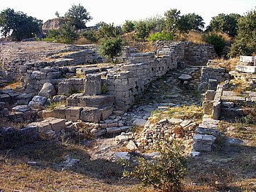

So if I were to go to greece, I'd love to go the Athens or to Sparta or any of the old city-states cause I love history and I think it would be awesome to go to any of those places but one in particular would be Troy. So Troy is where the trojen war horse story takes place. If you don't know that story ill fill you in really quickly. So the prince of troy went to Greece and stop Helen who was regarded as one of the most beautiful women in the world. After they sailed back to Troy the Greek city-states formed/unified greece to get back Helen. After 10 long years the greeks couldn't take down the walls of troy so they thougth of some trickery, they built a wooden horse and snuck a handful of people into troy and opened the gates. After the greeks go in they killed almost everyone in Troy and then Troy dissapeired...until the 19 century when a rich European wanted to retrace the steps Homer took and the book "The Oddesey"
